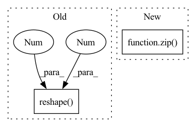

Pattern ID :9882
Before Change
def search(self, query, limit):
// Run the query
ids, distances = self.model.knn_query(query.reshape(1 , -1 ) , k=limit)
// Convert distances to similarity scores
scores = [1 - d for d in distances[0]]After Change
// Convert distances to similarity scores
scores = [1 - d for d in distance]
results.append(list(zip( ids[x], scores) ))
return results
In pattern: SUPERPATTERN
Frequency: 4
Non-data size: 2
Instances Fragment ID: 35360395
Project Name: neuml/txtai
Commit Name: e84d7c003b02c0ec6a451130a66a3f5652f38e48
Time: 2021-01-08
Author: 561939+davidmezzetti@users.noreply.github.com
File Name: src/python/txtai/ann.py
M Class Name: HNSW
N Class Name: HNSW
M Method Name: search(3)
N Method Name: search(3)
M Parent Class: ANN
N Parent Class: ANN
M File Name: src/python/txtai/ann.py
N File Name: src/python/txtai/ann.py
M Start Line: 190
M End Line: 196
N Start Line: 202
N End Line: 212
Before Change
def loss_bboxes(self, outputs, targets, matches, num_boxes, matches_per_class=1):
assert "pred_boxes" in outputs
bs = outputs["pred_boxes"].shape[0]
box_preds = outputs["pred_boxes"].reshape( bs, 20 , 27 , -1)
box_labels = [target["boxes"] for target in targets] // can have different shapes
// Get matched pred boxes
match_ids = matches.nonzero().T.unbind()After Change
assert "pred_boxes" in outputs
idx = self._get_src_permutation_idx(indices)
src_boxes = outputs["pred_boxes"][idx]
target_boxes = torch.cat([t["boxes"][i] for t, (_, i) in zip( targets, indices) ], dim=0)
loss_bbox = F.l1_loss(src_boxes, target_boxes, reduction="none")
Fragment ID: 35360393
Project Name: bwittmann/transoar
Commit Name: 968e31194fced5e1134b6dda145a63d38d9b6236
Time: 2022-03-09
Author: bastian.wittmann@tum.de
File Name: transoar/models/criterion.py
M Class Name: TransoarCriterion
N Class Name: TransoarCriterion
M Method Name: loss_bboxes(5)
N Method Name: loss_bboxes(6)
M Parent Class: nn.Module
N Parent Class: nn.Module
M File Name: transoar/models/criterion.py
N File Name: transoar/models/criterion.py
M Start Line: 41
M End Line: 60
N Start Line: 64
N End Line: 76
Before Change
logits = logits.reshape(batch_size * seq_len, -1) // (batch_size * seq_len, vocab_size)
mask_logits = logits[mask_positions_after_reshaped] // (batch * label_num, vocab_size)
mask_labels = mask_labels.reshape(-1 , 1 ) .squeeze() // (batch * label_num)
loss = cross_entropy_criterion(mask_logits, mask_labels)
return loss / masked_lm_scaleAfter Change
batch_size, seq_len, vocab_size = logits.size()
loss = None
for single_logits, single_sub_mask_labels, single_mask_positions in zip( logits, sub_mask_labels, mask_positions) :
single_mask_logits = single_logits[single_mask_positions] // (mask_label_num, vocab_size)
single_mask_logits = single_mask_logits.repeat(len(single_sub_mask_labels), 1, 1) // (sub_label_num, mask_label_num, vocab_size)
single_mask_logits = single_mask_logits.reshape(-1, vocab_size) // (sub_label_num * mask_label_num, vocab_size) Fragment ID: 35360385
Project Name: harderthenharder/transformers_tasks
Commit Name: bf825bb22c43795f1e3a08cf8969ddc613051e76
Time: 2022-11-30
Author: pankeyu@pankeyus-MacBook-Pro.local
File Name: prompt_tasks/p-tuning/utils.py
M Class Name: AnonimousClass
N Class Name: AnonimousClass
M Method Name: mlm_loss(6)
N Method Name: mlm_loss(6)
M Parent Class:
N Parent Class:
M File Name: prompt_tasks/p-tuning/utils.py
N File Name: prompt_tasks/p-tuning/utils.py
M Start Line: 204
M End Line: 212
N Start Line: 190
N End Line: 203
Before Change
def search(self, query, limit):
// Run the query
self.model.nprobe = 6
scores, ids = self.model.search(query.reshape(1 , -1 ) , limit)
// Map results to [(id, score)]
return list(zip(ids[0].tolist(), (scores[0]).tolist()))After Change
// Map results to [(id, score)]
results = []
for x, score in enumerate(scores):
results.append(list(zip( ids[x].tolist(), score.tolist()) ))
return results
Fragment ID: 35360391
Project Name: neuml/txtai
Commit Name: e84d7c003b02c0ec6a451130a66a3f5652f38e48
Time: 2021-01-08
Author: 561939+davidmezzetti@users.noreply.github.com
File Name: src/python/txtai/ann.py
M Class Name: Faiss
N Class Name: Faiss
M Method Name: search(3)
N Method Name: search(3)
M Parent Class: ANN
N Parent Class: ANN
M File Name: src/python/txtai/ann.py
N File Name: src/python/txtai/ann.py
M Start Line: 158
M End Line: 161
N Start Line: 166
N End Line: 173